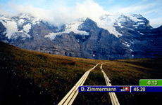

LAUBERHORNRENNEN IM SOMMER
Daniel Zimmermann | Schweiz 2006 | 6 Min.
Format: BetaSP
Material: DV
Originalsprache: Deutsch
Drehbuch: Daniel Zimmermann
Kamera: Bernhard Braunstein
Schnitt: Thomas Bachmann
Ton: Roger Dupuis
Produktion: Samuel Huber, dz-productions
www.lauberhornrennenimsommer.ch
Für sein "Mixed Media Kunstprojekt" verlegte Daniel Zimmermann das Lauberhornrennen, die längste Ski-Abfahrt der Welt, in den Sommer. 10 000 Holzleisten beschreiben die stets angestrebte, im Winter nie erreichte Ideallinie. Mit einem speziell angefertigten Kamera-Stativ wurde die Ideallinie Meter für Meter abgeschritten und gefilmt, wobei die Position der Kamera der Optik des Skirennfahrers entspricht. Insgesamt fünf Stunden Film wurden auf dem Schnittplatz zur absoluten Bestzeit von 2 Minuten 23 Sekunden und 75 Hundertstel komprimiert. Die eingeblendeten Grafiken folgen den Regeln der Fernsehübertragung: Wie die unterlegten Live-Kommentare aus dem Originalrennen von 2006 (Matthias Hüppi und Bernhard Russi) vermitteln sie das Erlebnis absoluter Authentizität.
Daniel Zimmermann , geb. 1966 in Thun, ursprünglich Holzbildhauer, ist seit 1993 Mixed-Media Künstler. Im In- und Ausland hat er zahlreiche Kunstprojekte in Museen, Ausstellungsräumen sowie im öffentlichen Raum realisiert. Seine Arbeit umfasst unter anderem Kurzfilme, die auch an renommierten internationalen Filmfestivals gezeigt wurden. Er arbeitet mit Architekten, Filmer und seit jüngstem mit Choreografen und Tänzer zusammen.
Filme: Bobrennen im Sommer 2000 | Die 10 Schweizer 2002 | Lauberhornrennen im Sommer 2007
Ausstellungen (Auswahl): Olympia Bob Run St.Moritz Kunsthaus Biel 2000 | Die 10 Schweizer Biel 2002 | 2004 Kunstpanorama, Luzern | Fototage Biel 2005 | Lauberhornrennen im Sommer, Wengen 2006 | Liste Basel Kunstmuseum Thun
2007 | ArtDC Washington Convention Center 2007 | "Destinationen" e-Halle Basel 2007
zurück
|